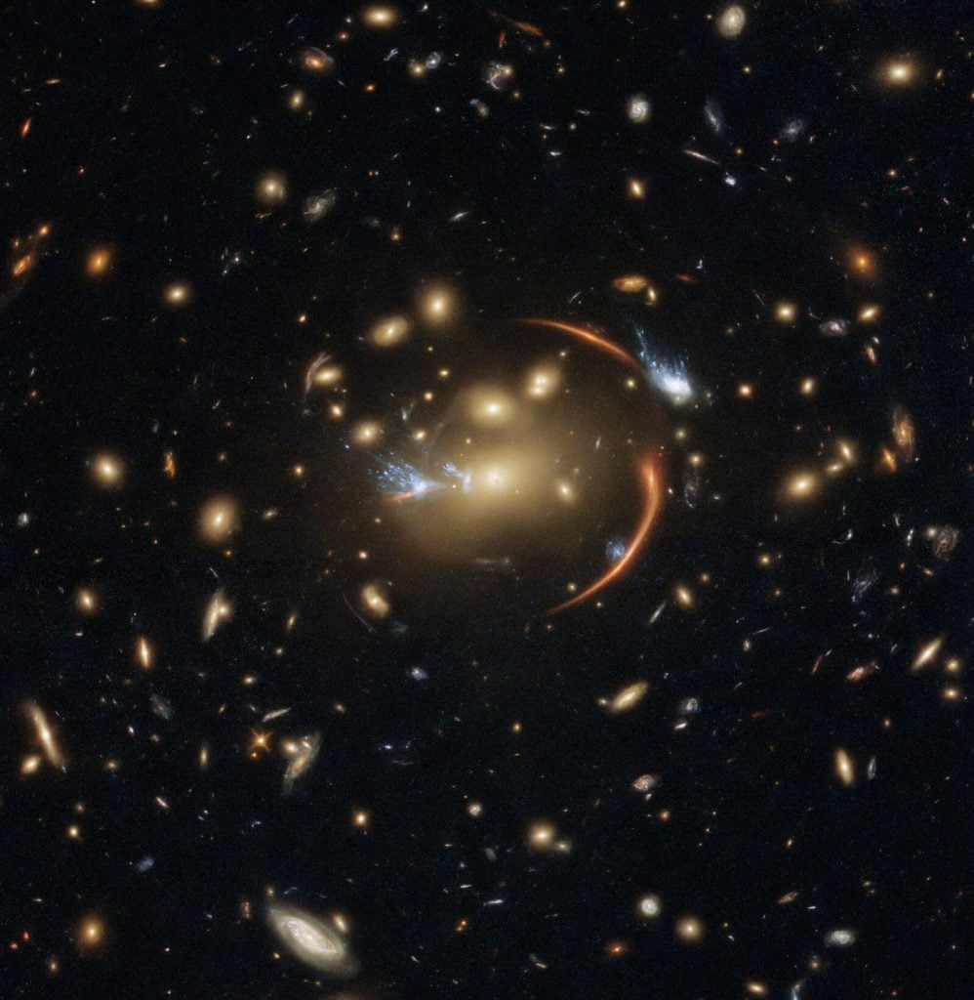
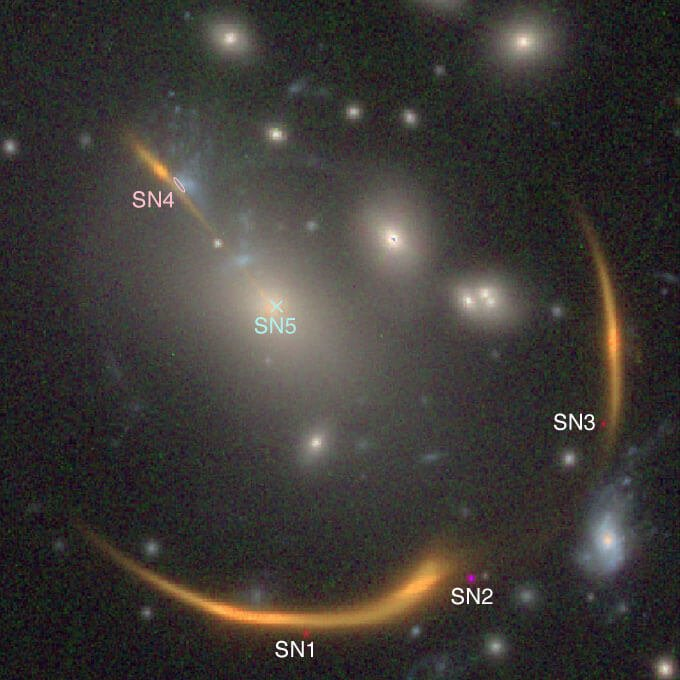

ကမ္ဘာကနေ အလွန် ဝေးကွာတဲ့ အရပ်မှာ ရှိတဲ့ MRG-M0138 အမည်ရ ဂလက်ဆီကြီး ထဲမှာ ရှိတဲ့ ကြယ်တစင်းဟာ လွန်ခဲ့တဲ့ နှစ် ၁၀ ဘီလီယံ (သန်း ၁၀,၀၀၀) ခန့်က ပြင်းထန်တဲ့ ဆူပါနိုဗာ ပေါက်ကွဲ မှုကြီး တစ်ခု အဖြစ်နဲ့ အဆုံးသတ် သွားခဲ့ပါတယ်။
ဒီ ကြယ်ကြီး ပေါက်ကွဲမှုကြောင့် ဖြစ်ပေါ်လာတဲ့ ဆူပါနိုဗာ ပေါက်ကွဲမှု ကြီးကို ၂၀၁၆ မှာ သိပ္ပံ ပညာရှင်တွေ ပထမဆုံး တွေ့ရှိခဲ့ ကြတာ ဖြစ်ပါတယ်။ အဲ့သည် အချိန်က ဒီ ဆူပါနိုဗာကို ဟတ်ဘယ် တယ်လီစကုပ် ကြီးက ရိုက်ကူးထားတဲ့ ဓါတ်ပုံမှာ အစက်လေး သုံးစက် အနေနဲ့ တွေ့မြင် ခဲ့ကြ ရပါတယ်။
ဒီ လို အစက် ၃ စက် အဖြစ် ဖြစ်ပေါ် နေ ရတာကတော့ ဒီ ဆူပါနိုဗာ နဲ့ ကမ္ဘာနဲ့ ကြားထဲမှာ ဒြပ်ထု ကြီးမားတဲ့ ဂလက်ဆီ အစုအဝေးကြီး တစ်ခု တည်ရှိနေ လို့ပဲ ဖြစ်ပါတယ်။
ဒီ ဂလက်ဆီ အစုအဝေး (galaxy cluster) ရဲ့ ဒြပ်ထုက ကြီးမားတာမို့ သူ့ရဲ့ ဆွဲငင်အား ကလဲ အတော်လေး ကြီးမားပါတယ်။ ဒီလို ကြီးမားတဲ့ ဆွဲငင်အားကြောင့် ဆူပါနိုဗာက လာတဲ့ အလင်းတန်းတွေဟာ မှန်ဘီလူး တစ်ခုကို ဖြတ်လာရ သလိုမျိုး ကွေးသွားပါတယ်။
ဒီလို ကွေးသွားတာဟာ မှန်ဘီလူး တစ်ခုကို ဖြတ်လာတဲ့ အလင်းတန် တွေလိုပဲမို့လို့ ဒီ ဂလက်ဆီအစုအဝေးရဲ့ အနောက်ဖက်မှာ ရှိတဲ့ ဆူပါနိုဗာရဲ့ အလင်းကို ချဲ့ပေးလိုက် သလိုမျိုး ဖြစ်သွားပါတယ်။ ဒီလို ချဲ့လိုက်သလို ဖြစ်သွား သလိုပဲ ရောက်လာတဲ့ အလင်းတန်း တွေဟာလဲ တစ်နေရာထဲ သွားမစုပဲ သုံးနေရာ ခွဲပြီး သွားစုပါတယ်။ ဒီလို စုတဲ့ နေရာ ၃ နေရာ ကွဲသွားတာမို့ သူ့ပုံကို နေရာ ၃ ခုမှာ ကွဲပြီး မြင်ရတာ ဖြစ်ပါတယ်။

ဒီ အလင်းတန်း တွေဟာ ကမ္ဘာကို ၂၀၃၀ ခုနှစ် အနှောင်းပိုင်း လောက်မှာမှ ရောက်လာ ကြမယ်လို့ သိပ္ပံ ပညာရှင် တွေက ခန့်မှန်း ကြပါတယ်။ ဒါ့ကြောင့် လာမယ့် ၂၀၃၇ ခုနှစ် မှာ ဒီ ဆူပါနိုဗာ ကြီးကို ကမ္ဘာကနေ ထပ်မံ မြင်တွေ့ ကြရ အုံးမှာ ဖြစ်တယ်လို့ ပညာရှင် တွေက ဟောကိန်း ထုတ်လိုက်တာပဲ ဖြစ်ပါတယ်။
ဒီလို အလင်းရောက်ရှိချိန် နောက်ကျချိန်ဟာ ၂၁ နှစ်တောင် ကွာခြား နေပါတယ်။ ဒါဟာ အခုထိ ဒီလို ဖြစ်ရပ်မျိုးတွေမှာ အကြာဆုံး အလင်း ရောက်ရှိချိန် နှောင့်နှေးမှုပဲ ဖြစ်ပါတယ်။
အခု ဟောကိန်းကို နက္ခတ် ပညာရှင် တွေက စက်တင်ဘာ ၁၃ ရက်နေ့ထုတ် Nature Astronomy သုတေသန ဂျာနယ်မှာ တင်ပြ ထားကြတာ ဖြစ်ပါတယ်။
ဒီလို ကြာမြင့်တဲ့ အလင်း ရောက်ရှိချိန် နှောင့်နှေးမှုဟာ နက္ခတ် ပညာရှင် တွေကို အလွန် ရှားပါးတဲ့ အခွင့်အရေး တခု ဖန်တီးပေးလိုက် တာပဲ ဖြစ်ပါတယ်။ အဲ့ဒါကတော့ အခု ဖြစ်ရပ်ကနေ စကြာဝဠာရဲ့ ပြန့်ကားမှု အလျင်ကို ပိုပြီး တိတိကျကျ တိုင်းတာ နိုင်မယ်လို့ ပညာရှင် တွေက မျှော်လင့် ထားကြလို့ပဲ ဖြစ်ပါတယ်။
ပညာရှင် တွေဟာ ဒီ ဆူပါနိုဗာ ဆီလာ အလင်းတန်းတွေ လာတဲ့ လမ်းကြောင်းအနီးတဝိုက်မှာ ရှိတဲ့ ဂလက်ဆီ ကြီးတွေရဲ့ ဆွဲငင်အားက အလင်းတန်း တွေအပေါ် ဘယ်လို သက်ရောက်သလဲ ဆိုတာကို တွက်ချက်ပြီး ဒီလို ဟောကိန်း ထုတ်ခဲ့တာ ဖြစ်ပါတယ်။ ဒီ ဆူပါနိုဗာကို ၂၀၃၇ မှာ တကြိမ် နဲ့ ၂၀၄၂ မှာ တစ်ကြိမ် နောက်ထပ် ထပ်မံ တွေ့မြင် ကြရ အုံးမှာ ဖြစ်ပါတယ်။

နက္ခတ် ပညာရှင် အားလုံးကတော့ ဒီ ခန့်မှန်းချက်ကို လက်ခံ ကြတာ မဟုတ်ပါဘူး။ သူတို့က နှောင့်နှေးချိန် ဘယ်လောက် ကြာမလဲ ဆိုတာကို အတိအကျ တွက်ဖို့ဆိုတာ အလွန် ခက်ခဲတယ် ဆိုတာကို ထောက်ပြ ကြပါတယ်။
အဓိက ထောက်ပြ ကြတာကတော့ မူရင်း ဂလက်ဆီ နဲ့ ကြားခံ ဂလက်ဆီ တွေထဲက အမှောင်ဒြပ် (Dark Matter) ပမာဏကို အတိအကျ သိနိုင်ဖို့ မဖြစ်နိုင်ဘူး ဆိုတာပဲ ဖြစ်ပါတယ်။ ဒီ အမှောင်ဒြပ်ဟာ ခန့်မှန်းလို့ မရတဲ့ ဆွဲငင်အား ရပ်ဝန်းကို ဖန်တီးပေးမှာ ဖြစ်တာမို့ ဒီ ရပ်ဝန်းကို ဖြတ်လာတဲ့ အလင်း ဘယ်လောက် ယိုင်သွားမလဲ ဆိုတာကို ဘယ်လိုမှ ခန့်မှန်းဖို့ မဖြစ်နိုင်ဘူး ဆိုတာကို ထောက်ပြ ကြတာ ဖြစ်ပါတယ်။
ဒီလို ပြန်ပေါ်မယ့် အချိန် အတိအကျကို သဘော မတူနိုင်ကြပေမယ့် နက္ခတ် ပညာရှင် အားလုံး လက်ခံ ထားကြတာကတော့ ဒီ ပြန်ပေါ်လာမယ့် အဖြစ်အပျက်ဟာ အရေးပါတဲ့ အဖြစ်အပျက် တစ်ခု ဖြစ်မယ် ဆိုတာပဲ ဖြစ်ပါတယ်။
ဒီ ကြာမြင့်ချိန်ကို အခြေခံပြီး စကြာဝဠာရဲ့ ပြန့်ကားမှု အလျင်နှုန်းကို ယခုထက် ပိုမို တိကျစွာ တိုင်းတာ နိုင်မယ် ဆိုတာကို ပညာရှင် အားလုံးက လက်ခံ ထားကြပါတယ်။ ဒါ့ကြောင့်လဲ ဒီ ဆူပါနိုဗာ ပြန်ပေါ်လာချိန်ကို အတိအကျ တိုင်းတာနိုင်ဖို့ အခု ကတဲက ကြိုတင် ပြင်ဆင်မှုတွေ ပြုလုပ် ထားခဲ့ ကြပါတယ်။
ဒီလို စကြာဝဠာရဲ့ ပြန့်ကားနှုန်းကို ပိုမို တိကျစွာ တိုင်းတာ နိုင်တာဟာ စကြာဝဠာရဲ့ သက်တမ်းကို အတိအကျ တွက်ချက်ရာမှာ အရေးပါတဲ့ အခြေခံ အချက်တစ်ခု ဖြစ်လာမှာ ဖြစ်ပါတယ်။ အထူးသဖြင့် စကြာဝဠာရဲ့ ပြန့်ကားမှု အလျင်ကို တိုင်းတဲ့ ဟတ်ဘယ် ကိန်းသေ (Hubble constant) ရဲ့ တန်ဖိုးနဲ့ ပတ်သက်လို့ အခုထိ အငြင်းပွားနေတာမို့ ဒီ ဆူပါနိုဗာ ပြန်ပေါ်လာမယ့် ကြာမြင့်ချိန်က ဒီ အငြင်းပွားမှုကို ဖြေရှင်းကောင်း ဖြေရှင်း ပေးနိုင်မယ်လို့ အချို့က မျှော်လင့် ထားကြပါတယ်။
အကယ်လို့ ရလာမယ့် အဖြေဟာ ဟတ်ဘယ် ကိန်းသေရဲ့ တန်ဖို့ကို ပြောင်းလဲ သွား စေနိုင်တယ် ဆိုရင် ကျွန်တော်တို့ စကြာဝဠာရဲ့ သက်တမ်း ခန့်မှန်းချက် ဟာလဲ နှစ် တစ်ဘီလီယံ (နှစ် သန်း တစ်ထောင်) ခန့် အထိ အပြောင်းအလဲ ဖြစ်သွားနိုင်တယ်လို့ ပညာရှင် အချို့က ရှင်းပြ ကြပါတယ်။
Ref: A supernova’s delayed reappearance could pin down how fast the universe expands | Science News